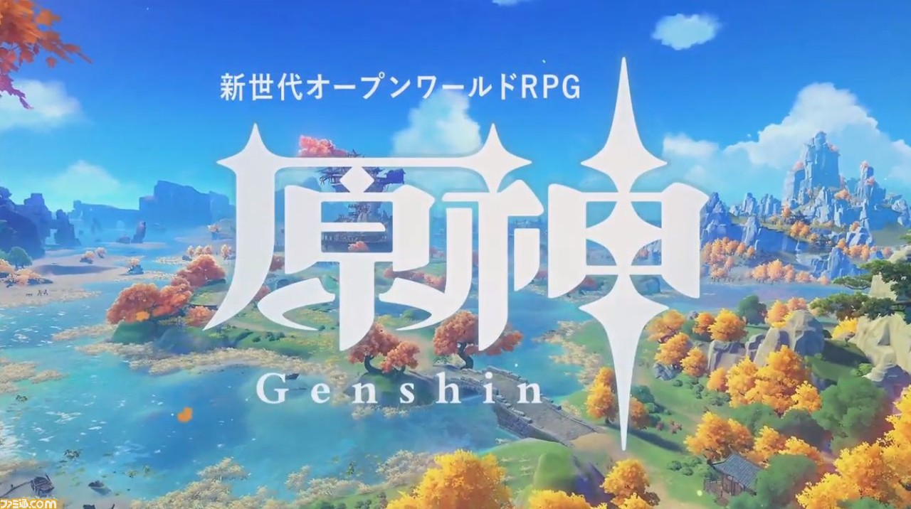

小林のゲーム部屋
～勝手にピックアップ&雑に紹介～
今回紹介するのは
原神です
原神(げんしん)とは？

『原神』は、中国のゲーム会社、miHoYoによって開発および運営されるオンラインゲームである。
内容は基本プレイ無料スタイルのオープンワールド型アクションRPG。
ウィキペディア
| 初リリース | 2020年9月28日 |
|---|---|
| モード | マルチプレイヤーコンピュータゲーム |
| プラットフォーム | PlayStation 4、 Android、 Microsoft Windows、 PlayStation 5、 iOS |
| 開発元 | miHoYo、 Shanghai Miha Touring Film Technology Co., Ltd. |
| ジャンル | アドベンチャーゲーム、 アクションロールプレイングゲーム |
| 受賞歴 | The Game Award for Best Mobile Game |
| 販売元 | miHoYo、 COGNOSPHERE PTE. LTD. |
解説
原神(げんしん)は、広大な美しい世界を自由に旅できるオープンワールドRPGです。
昨今のオープンワールドに多いリアリティ溢れるグラフィックというよりは、色彩ゆたかなアニメ調の世界を旅できます。
クエストなどの探索要素も豊富なので、美麗な世界をくまなく冒険しましょう。
世界観
原神の舞台は、幻想世界「テイワット」。
大陸にある「モンド」や「璃月」、「稲妻」に所属する人々が登場します。
今後もアップデートで様々な国が増える予定です。
自由度
原神は、オープンワールドで自由な冒険ができます。
山を登ったり、海を泳いだり、さらには空を飛んだりと移動できる範囲も多く、
自由度が非常に高いゲームです
魅力的なキャラクター達
原神のキャラクターはどれも魅力的です。
カッコいいキャラから可愛いキャラまで揃っているので、男性にも女性にもおすすめです。
元素反応を利用
原神の世界では「炎」「水」「氷」「雷」「風」「草」「岩」の7つの元素が存在し、
バトル以外でもフィールド上の水を氷の元素を使用して足場を作れます。
旅の目的は双子の兄妹を助けること
最初のストーリーでは、主人公を選択する場面があり、
選択しなかった双子の兄妹は、捕らえられてしまいます。
最初の主人公選択後は、切り替えできないので、注意しましょう。